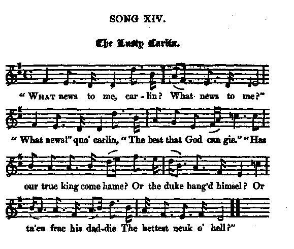

The Lusty Carlin
La joyeuse commère
from "Remains of Nithsdale and Galloway Song", page 137, 1810
Tune - Mélodie"Our ain country"
from Hogg's "Jacobite Relics" , vol. 1 N°81 and vol.2 N°14
Sequenced by Christian Souchon

|
To the song:
"This song relates to the subject of the foregoing long note; namely, the joy of the Nithdale peasantry, on hearing of their lord's escape. Only a very few of his tenants, however, rode with him on the expedition." Source: Cromek's "Remains", p.137. |
A propos du chant:
"Ce chant traite du même sujet que le précédent , à savoir la joie des paysans du Nithsdale en apprenant l'évasion de leur seigneur. Seuls quelques métayers, cependant, participèrent à l'expédition". Source: Cromek's "Remains", p.137. |

|
THE LUSTY CARLIN
1. " What news to me, carlin ? What news to me ?" What news!"quo' carlin, " The best that God can gie." "Has our true king come hame? Or the duke hang'd himsel ? Or ta'en frae his daddie The hettest neuk o' hell?" 2. " The duke's hale and fier, carle, " The duke's hale and fier, " And our ain Lord Nithsdale " Will soon be 'mang us here." " Brush me my coat, carlin, " Brush me my shoon; " I'll awa and meet Lord Nithsdale, " When he comes to our town." 3. " Alake-a-day!" quo' the carlin, " Alake-the-day!" quo' she, " He's owre in France, at Charlie's hand, " Wi' only ae pennie." " We'll sell a' our corn, carlin, " We'll sell a' our bear, " And we'll send to Lord Nithsdale " A' our settle gear. 4. " Make the piper blaw, carlin, " Make the piper blaw, " And make the lads and lasses baith " Their souple legs shaw. " We'll a' be glad, carlin, " We'll a' be glad, " And play ' The Stuarts back again,' " To put the Whigs mad." Source: "The Jacobite Relics of Scotland, being the Songs, Airs and Legends of the Adherents to the House of Stuart" collected by James Hogg, volume2 published in Edinburgh by William Blackwood in 1821. |
LA JOYEUSE COMMERE
1. "Quelles nouvelles, Commère, dites-moi?" "J'en ai, dit-elle, Et des meilleures qui soient." "Le vrai roi revenu? Le duc se serait-il pendu? A-t-il pris à son père Le coin le plus chaud de l'enfer? 2. "Le duc est sain et sauf, Mon cher, croyez-moi, Et notre Lord Nithsdale Très bientôt reviendra." "Brossez-moi mon manteau, Ma chère, ainsi que mes souliers. Je vais à sa rencontre En ville, s'il doit arriver." 3. La commère s'écria "Pauvres de nous!" En France, il sert Charlie, et pour pas un sou." "Vendons notre froment, ma chère Notre orge également, Et envoyons à Lord Nithsdale Nos petits placements!" 4. Courez, commère, Faites venir le sonneur! Faites accourir Danseuses et danseurs! Réjouissons-nous, commère, Oh, oui, réjouissons-nous; Jouez "Le retour des Stuart" jusqu'à Rendre tous les Whigs fous! (Trad. Christian Souchon (c) 2010) |
|
|